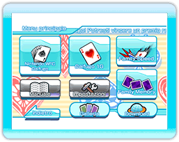

All'avvio del gioco viene visualizzato il menu principale.
Gioca con gli amici o sfida
persone che non conosci sulla Nintendo WFC.
Scegliendo questa modalità
si accede alla Selezione utente.
In questa modalità sfiderai la CPU.
Sconfiggendo la CPU assisterai alla scena finale del tuo personaggio.
Puoi giocare a Speed contro la CPU oppure contro un amico.
Puoi giocare a Memory in varie modalità, sfidando la CPU oppure giocando in un massimo di 4 giocatori.
Consulta le regole di "Daifugo", "Speed" e "Memory".
Consente di selezionare l'impugnatura del telecomando Wii per giocare a Daifugo.
Consente di vedere gli stili delle carte, oltre a visualizzare quelli disponibili attraverso il download di contenuti aggiuntivi.
Consente di acquistare nuovi stili di carte o di cancellare quelli già acquistati.